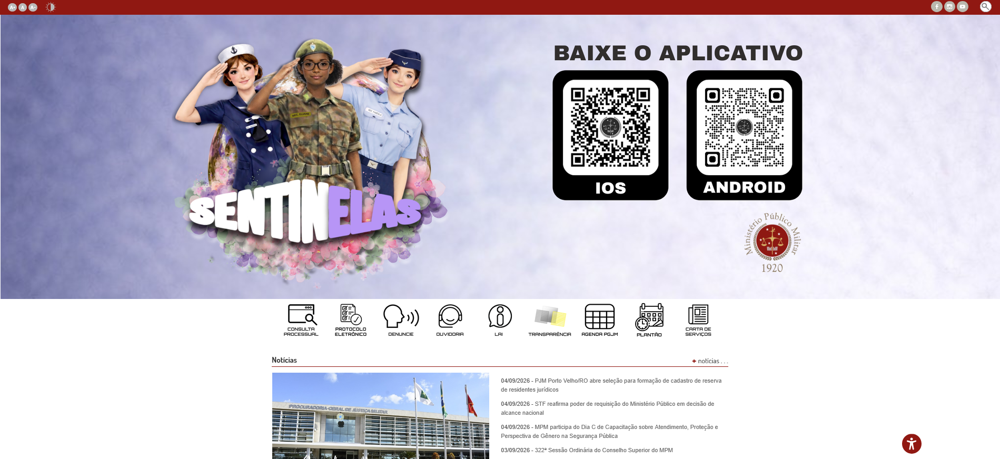
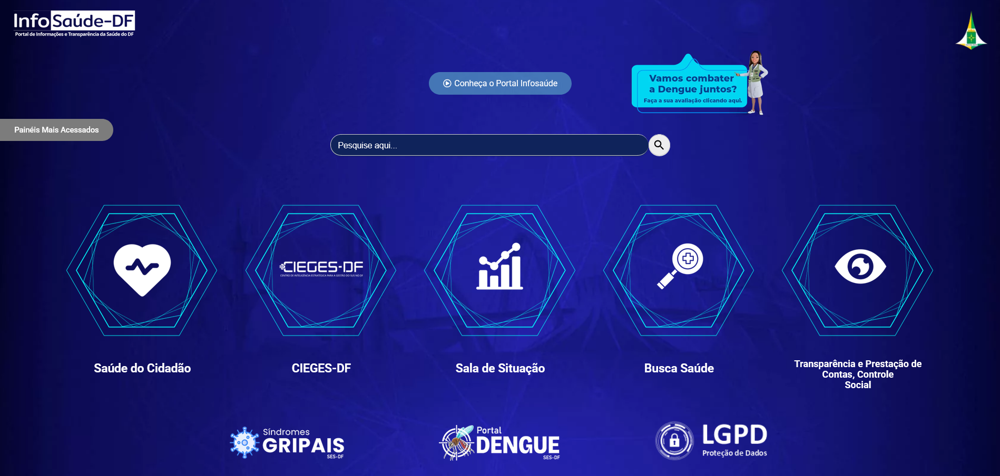
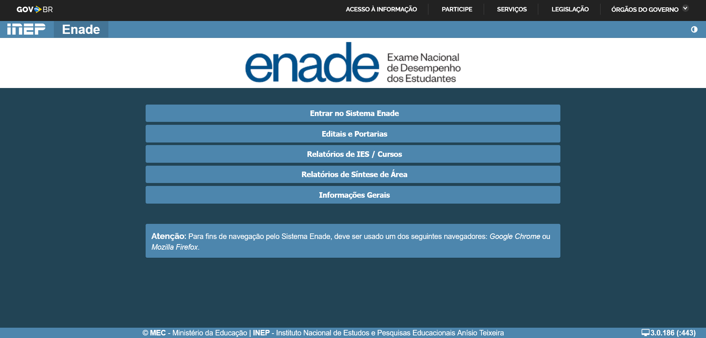
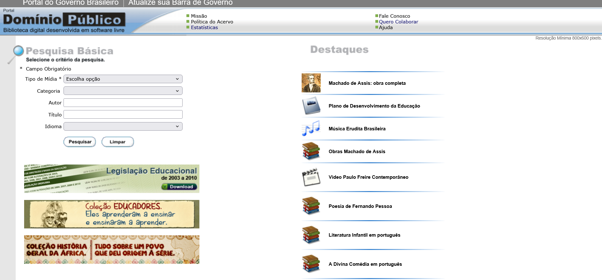

Sites Avaliados
Introdução
Este documento apresenta a lista de sites e sistemas avaliados pelo grupo como potenciais candidatos para o projeto da disciplina. A avaliação foi baseada em critérios definidos previamente em reunião, para garantir que o sistema escolhido atendesse aos requisitos pedagógicos de IHC.
Para garantir uma escolha técnica e alinhada aos objetivos da disciplina, o grupo definiu quatro critérios principais: - C1 - Facilidade de Acesso a Usuários: Grau de facilidade para encontrar, recrutar e entrevistar usuários reais do sistema ao longo do semestre. - C2 - Problemas de Usabilidade e Acessibilidade: Quantidade de falhas heurísticas que oferecem boas oportunidades de redesenho. - C3 - Escopo Adequado: Avaliação do tamanho do sistema e se possui fluxos de tarefas claros. - C4 - Relevância Prática: O impacto do sistema na sociedade ou no ambiente acadêmico.
A Matriz de decisão dos sites candidatos pode ser visualizada na Tabela 1.
Tabela 1: Matriz de decisão dos sites candidatos.
| Site Avaliado | C1: Acesso a Usuários | C2: Problemas de Usabilidade | C3: Escopo Adequado | C4: Relevância Prática | Nota Final |
|---|---|---|---|---|---|
| Ministério Público Militar (MPM) | 1 | 3 | 3 | 3 | 10 |
| InfoSaúde DF | 4 | 3 | 3 | 5 | 15 |
| Enade (INEP) | 4 | 4 | 4 | 4 | 16 |
| Domínio Público (MEC) | 5 | 5 | 5 | 5 | 20 |
Fonte: Autores.
Ministério Público Militar (MPM)
Embora seja um portal governamental importante, identificamos alguns limitadores para o projeto: - O público-alvo (procuradores, advogados militares) é extremamente restrito. - A dificuldade de recrutar esses usuários inviabilizaria a etapa de pesquisa e entrevistas.
Conforme ilustrado na Figura 1, a interface inicial do MPM apresenta informações muito institucionais.

Figura 1 - Imagem da página inicial do site eletrônico - MPM. (Fonte: mpm.mp.br)InfoSaúde DF
Possui enorme relevância prática para a população local do Distrito Federal no acompanhamento de dados epidemiológicos. No entanto: - Foca muito em painéis de visualização de dados (dashboards). - Limita a criação de fluxos de interação complexos exigidos pela disciplina.
Como podemos ver na Figura 2, o site do InfoSaúde DF é voltado para dashboards.

Figura 2 - Imagem da página inicial do site eletrônico - InfoSaúde DF. (Fonte: info.saude.df.gov.br)Enade (INEP)
Tem um escopo muito bom e relevância para o contexto universitário, porém o grupo decidiu não seguir com ele porque: - O sistema possui alta sazonalidade (só tem picos de uso durante o período de provas). - Isso dificulta a avaliação do contexto de uso contínuo ao longo de um semestre padrão.
A Figura 3 demonstra a página inicial do Enade, focada no acesso do estudante.

Figura 3 - Imagem da página inicial do site eletrônico - Enade. (Fonte: enade.inep.gov.br)Domínio Público (MEC)
O Portal Domínio Público foi o site escolhido pela equipe, pois obteve a maior pontuação (20) em nossa avaliação. - O público-alvo (estudantes, professores e pesquisadores) é de fácil acesso. - Apresenta problemas graves de usabilidade e responsividade, garantindo boas oportunidades de melhoria.
Conforme ilustrado na Figura 4, a interface inicial do Portal Domínio Público é bastante defasada.

Figura 4 - Imagem da página inicial do site eletrônico - Domínio Público. (Fonte: dominiopublico.mec.gov.br)Histórico de Versão
| Versão | Data | Descrição | Autor(es) | Revisor(es) |
|---|---|---|---|---|
1.0 |
04/09/2026 | Criação da página de sites avaliados no padrão de referência | Gustavo Antonio | [A Definir] |
Bibliografia
[1] BARBOSA, Simone D. J.; SILVA, Bruno S. Interação Humano-Computador. 1. ed. Rio de Janeiro: Elsevier, 2010.